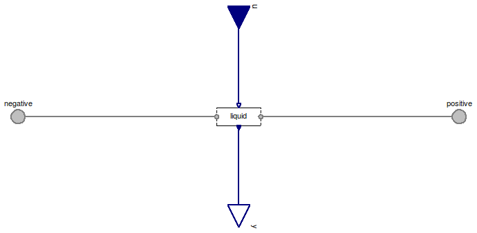
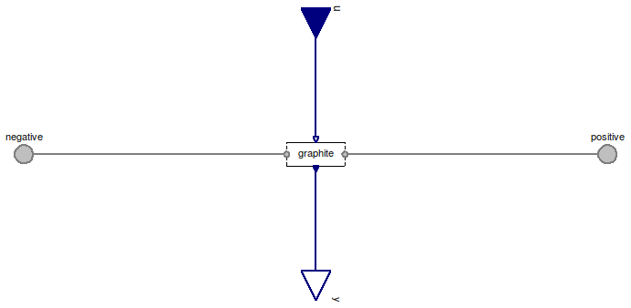

Table of Contents
- User's Guide
- Blocks
- Conditions
- Assemblies
- Regions
- Subregions
- Phases
- Species
- Connectors
- Characteristics
- Units
- Quantities
- Utilities
- Icons
Download
- Latest version (**Empty; please check back soon or contact kdavies4 at gmail.com.)

| Name | Description |
|---|---|
| Conditions for a pair of FaceBus connectors, with flows specified by default | |
| Conditions for a FaceBus connector, with flows specified by default and only the fluid phases included | |
| FaceBusGraphiteOnly | Conditions for a FaceBus connector, with flows specified by default and only the graphite phase |
| FaceBusEfforts | Conditions for a pair of FaceBus connectors, with differences in efforts specified by default |
| Conditions for a FaceBus connector |

| Type | Name | Default | Description |
|---|---|---|---|
| Phases (click to edit) | |||
| Gas | gas | Gas | |
| Graphite | graphite | Graphite | |
| Ionomer | ionomer | Ionomer | |
| Liquid | liquid | Liquid | |
| Type | Name | Description |
|---|---|---|
| FaceBus | negative | Negative-side multi-species connector for material, momentum, and energy |
| FaceBus | positive | Positive-side multi-species connector for material, momentum, and energy |
| RealInputBus | u | Bus of inputs to specify conditions |
| RealOutputBus | y | Output bus of measurements |
model FaceBusFlows "Conditions for a pair of FaceBus connectors, with flows specified by default" extends FCSys.Icons.Conditions.SingleShort; Phases.Gas gas "Gas"; Phases.Graphite graphite "Graphite"; Phases.Ionomer ionomer "Ionomer"; Phases.Liquid liquid "Liquid"; Connectors.FaceBus negative "Negative-side multi-species connector for material, momentum, and energy"; Connectors.FaceBus positive "Positive-side multi-species connector for material, momentum, and energy"; Connectors.RealInputBus u "Bus of inputs to specify conditions"; Connectors.RealOutputBus y "Output bus of measurements"; equation // Gas connect(gas.negative, negative.gas); connect(gas.positive, positive.gas); connect(u.gas, gas.u); connect(gas.y, y.gas); // Graphite connect(graphite.negative, negative.graphite); connect(graphite.positive, positive.graphite); connect(u.graphite, graphite.u); connect(graphite.y, y.graphite); // Ionomer connect(ionomer.negative, negative.ionomer); connect(ionomer.positive, positive.ionomer); connect(u.ionomer, ionomer.u); connect(ionomer.y, y.ionomer); // Liquid connect(liquid.negative, negative.liquid); connect(liquid.positive, positive.liquid); connect(u.liquid, liquid.u); connect(liquid.y, y.liquid); end FaceBusFlows;
| Type | Name | Default | Description |
|---|---|---|---|
| Phases (click to edit) | |||
| Gas | gas | Gas | |
| Liquid | liquid | Liquid | |
| Type | Name | Description |
|---|---|---|
| RealInputBus | u | Bus of inputs to specify conditions |
| RealOutputBus | y | Output bus of measurements |
| FaceBus | negative | Negative-side multi-species connector for material, momentum, and energy |
| FaceBus | positive | Positive-side multi-species connector for material, momentum, and energy |
model FaceBusFluidOnly "Conditions for a FaceBus connector, with flows specified by default and only the fluid phases included" extends FCSys.Icons.Conditions.SingleShort; Phases.Gas gas "Gas"; Phases.Liquid liquid "Liquid"; Connectors.RealInputBus u "Bus of inputs to specify conditions"; Connectors.RealOutputBus y "Output bus of measurements"; Connectors.FaceBus negative "Negative-side multi-species connector for material, momentum, and energy"; Connectors.FaceBus positive "Positive-side multi-species connector for material, momentum, and energy"; equation // Gas connect(gas.negative, negative.gas); connect(gas.positive, positive.gas); connect(u.gas, gas.u); connect(gas.y, y.gas); // Liquid connect(liquid.negative, negative.liquid); connect(liquid.positive, positive.liquid); connect(u.liquid, liquid.u); connect(liquid.y, y.liquid); end FaceBusFluidOnly;

| Type | Name | Default | Description |
|---|---|---|---|
| Phases (click to edit) | |||
| Graphite | graphite | Graphite | |
| Type | Name | Description |
|---|---|---|
| RealInputBus | u | Bus of inputs to specify conditions |
| RealOutputBus | y | Output bus of measurements |
| FaceBus | negative | Negative-side multi-species connector for material, momentum, and energy |
| FaceBus | positive | Positive-side multi-species connector for material, momentum, and energy |
model FaceBusGraphiteOnly "Conditions for a FaceBus connector, with flows specified by default and only the graphite phase" extends FCSys.Icons.Conditions.SingleShort; Phases.Graphite graphite "Graphite"; Connectors.RealInputBus u "Bus of inputs to specify conditions"; Connectors.RealOutputBus y "Output bus of measurements"; Connectors.FaceBus negative "Negative-side multi-species connector for material, momentum, and energy"; Connectors.FaceBus positive "Positive-side multi-species connector for material, momentum, and energy"; equation // Graphite connect(graphite.negative, negative.graphite); connect(graphite.positive, positive.graphite); connect(u.graphite, graphite.u); connect(graphite.y, y.graphite); end FaceBusGraphiteOnly;
 FCSys.Conditions.ByConnector.FaceBus.Pair.FaceBusEfforts
FCSys.Conditions.ByConnector.FaceBus.Pair.FaceBusEfforts

| Type | Name | Description |
|---|---|---|
| FaceBus | negative | Negative-side multi-species connector for material, momentum, and energy |
| FaceBus | positive | Positive-side multi-species connector for material, momentum, and energy |
| RealInputBus | u | Bus of inputs to specify conditions |
| RealOutputBus | y | Output bus of measurements |
model FaceBusEfforts "Conditions for a pair of FaceBus connectors, with differences in efforts specified by default" extends FaceBusFlows( gas( H2( redeclare replaceable function materialSpec = Conditions.ByConnector.Face.Pair.Material.density, redeclare replaceable function normalSpec = Conditions.ByConnector.Face.Pair.Translational.velocity, redeclare replaceable function followingSpec = Conditions.ByConnector.Face.Pair.Translational.velocity, redeclare replaceable function precedingSpec = Conditions.ByConnector.Face.Pair.Translational.velocity, redeclare replaceable function thermalSpec = Conditions.ByConnector.Face.Pair.Thermal.temperature, redeclare replaceable function materialMeas = Conditions.ByConnector.Face.Pair.Material.current, redeclare replaceable function normalMeas = Conditions.ByConnector.Face.Pair.Translational.force, redeclare replaceable function followingMeas = Conditions.ByConnector.Face.Pair.Translational.force, redeclare replaceable function precedingMeas = Conditions.ByConnector.Face.Pair.Translational.force, redeclare replaceable function thermalMeas = Conditions.ByConnector.Face.Pair.Thermal.heatRate), H2O( redeclare replaceable function materialSpec = Conditions.ByConnector.Face.Pair.Material.density, redeclare replaceable function normalSpec = Conditions.ByConnector.Face.Pair.Translational.velocity, redeclare replaceable function followingSpec = Conditions.ByConnector.Face.Pair.Translational.velocity, redeclare replaceable function precedingSpec = Conditions.ByConnector.Face.Pair.Translational.velocity, redeclare replaceable function thermalSpec = Conditions.ByConnector.Face.Pair.Thermal.temperature, redeclare replaceable function materialMeas = Conditions.ByConnector.Face.Pair.Material.current, redeclare replaceable function normalMeas = Conditions.ByConnector.Face.Pair.Translational.force, redeclare replaceable function followingMeas = Conditions.ByConnector.Face.Pair.Translational.force, redeclare replaceable function precedingMeas = Conditions.ByConnector.Face.Pair.Translational.force, redeclare replaceable function thermalMeas = Conditions.ByConnector.Face.Pair.Thermal.heatRate), N2( redeclare replaceable function materialSpec = Conditions.ByConnector.Face.Pair.Material.density, redeclare replaceable function normalSpec = Conditions.ByConnector.Face.Pair.Translational.velocity, redeclare replaceable function followingSpec = Conditions.ByConnector.Face.Pair.Translational.velocity, redeclare replaceable function precedingSpec = Conditions.ByConnector.Face.Pair.Translational.velocity, redeclare replaceable function thermalSpec = Conditions.ByConnector.Face.Pair.Thermal.temperature, redeclare replaceable function materialMeas = Conditions.ByConnector.Face.Pair.Material.current, redeclare replaceable function normalMeas = Conditions.ByConnector.Face.Pair.Translational.force, redeclare replaceable function followingMeas = Conditions.ByConnector.Face.Pair.Translational.force, redeclare replaceable function precedingMeas = Conditions.ByConnector.Face.Pair.Translational.force, redeclare replaceable function thermalMeas = Conditions.ByConnector.Face.Pair.Thermal.heatRate), O2( redeclare replaceable function materialSpec = Conditions.ByConnector.Face.Pair.Material.density, redeclare replaceable function normalSpec = Conditions.ByConnector.Face.Pair.Translational.velocity, redeclare replaceable function followingSpec = Conditions.ByConnector.Face.Pair.Translational.velocity, redeclare replaceable function precedingSpec = Conditions.ByConnector.Face.Pair.Translational.velocity, redeclare replaceable function thermalSpec = Conditions.ByConnector.Face.Pair.Thermal.temperature, redeclare replaceable function materialMeas = Conditions.ByConnector.Face.Pair.Material.current, redeclare replaceable function normalMeas = Conditions.ByConnector.Face.Pair.Translational.force, redeclare replaceable function followingMeas = Conditions.ByConnector.Face.Pair.Translational.force, redeclare replaceable function precedingMeas = Conditions.ByConnector.Face.Pair.Translational.force, redeclare replaceable function thermalMeas = Conditions.ByConnector.Face.Pair.Thermal.heatRate)), graphite('C+'( redeclare replaceable function materialSpec = Conditions.ByConnector.Face.Pair.Material.density, redeclare replaceable function normalSpec = Conditions.ByConnector.Face.Pair.Translational.velocity, redeclare replaceable function followingSpec = Conditions.ByConnector.Face.Pair.Translational.velocity, redeclare replaceable function precedingSpec = Conditions.ByConnector.Face.Pair.Translational.velocity, redeclare replaceable function thermalSpec = Conditions.ByConnector.Face.Pair.Thermal.temperature, redeclare replaceable function materialMeas = Conditions.ByConnector.Face.Pair.Material.current, redeclare replaceable function normalMeas = Conditions.ByConnector.Face.Pair.Translational.force, redeclare replaceable function followingMeas = Conditions.ByConnector.Face.Pair.Translational.force, redeclare replaceable function precedingMeas = Conditions.ByConnector.Face.Pair.Translational.force, redeclare replaceable function thermalMeas = Conditions.ByConnector.Face.Pair.Thermal.heatRate), 'e-'( redeclare replaceable function materialSpec = Conditions.ByConnector.Face.Pair.Material.density, redeclare replaceable function normalSpec = Conditions.ByConnector.Face.Pair.Translational.velocity, redeclare replaceable function followingSpec = Conditions.ByConnector.Face.Pair.Translational.velocity, redeclare replaceable function precedingSpec = Conditions.ByConnector.Face.Pair.Translational.velocity, redeclare replaceable function thermalSpec = Conditions.ByConnector.Face.Pair.Thermal.temperature, redeclare replaceable function materialMeas = Conditions.ByConnector.Face.Pair.Material.current, redeclare replaceable function normalMeas = Conditions.ByConnector.Face.Pair.Translational.force, redeclare replaceable function followingMeas = Conditions.ByConnector.Face.Pair.Translational.force, redeclare replaceable function precedingMeas = Conditions.ByConnector.Face.Pair.Translational.force, redeclare replaceable function thermalMeas = Conditions.ByConnector.Face.Pair.Thermal.heatRate)), ionomer( 'SO3-'( redeclare replaceable function materialSpec = Conditions.ByConnector.Face.Pair.Material.density, redeclare replaceable function normalSpec = Conditions.ByConnector.Face.Pair.Translational.velocity, redeclare replaceable function followingSpec = Conditions.ByConnector.Face.Pair.Translational.velocity, redeclare replaceable function precedingSpec = Conditions.ByConnector.Face.Pair.Translational.velocity, redeclare replaceable function thermalSpec = Conditions.ByConnector.Face.Pair.Thermal.temperature, redeclare replaceable function materialMeas = Conditions.ByConnector.Face.Pair.Material.current, redeclare replaceable function normalMeas = Conditions.ByConnector.Face.Pair.Translational.force, redeclare replaceable function followingMeas = Conditions.ByConnector.Face.Pair.Translational.force, redeclare replaceable function precedingMeas = Conditions.ByConnector.Face.Pair.Translational.force, redeclare replaceable function thermalMeas = Conditions.ByConnector.Face.Pair.Thermal.heatRate), 'H+'( redeclare replaceable function materialSpec = Conditions.ByConnector.Face.Pair.Material.density, redeclare replaceable function normalSpec = Conditions.ByConnector.Face.Pair.Translational.velocity, redeclare replaceable function followingSpec = Conditions.ByConnector.Face.Pair.Translational.velocity, redeclare replaceable function precedingSpec = Conditions.ByConnector.Face.Pair.Translational.velocity, redeclare replaceable function thermalSpec = Conditions.ByConnector.Face.Pair.Thermal.temperature, redeclare replaceable function materialMeas = Conditions.ByConnector.Face.Pair.Material.current, redeclare replaceable function normalMeas = Conditions.ByConnector.Face.Pair.Translational.force, redeclare replaceable function followingMeas = Conditions.ByConnector.Face.Pair.Translational.force, redeclare replaceable function precedingMeas = Conditions.ByConnector.Face.Pair.Translational.force, redeclare replaceable function thermalMeas = Conditions.ByConnector.Face.Pair.Thermal.heatRate), H2O( redeclare replaceable function materialSpec = Conditions.ByConnector.Face.Pair.Material.density, redeclare replaceable function normalSpec = Conditions.ByConnector.Face.Pair.Translational.velocity, redeclare replaceable function followingSpec = Conditions.ByConnector.Face.Pair.Translational.velocity, redeclare replaceable function precedingSpec = Conditions.ByConnector.Face.Pair.Translational.velocity, redeclare replaceable function thermalSpec = Conditions.ByConnector.Face.Pair.Thermal.temperature, redeclare replaceable function materialMeas = Conditions.ByConnector.Face.Pair.Material.current, redeclare replaceable function normalMeas = Conditions.ByConnector.Face.Pair.Translational.force, redeclare replaceable function followingMeas = Conditions.ByConnector.Face.Pair.Translational.force, redeclare replaceable function precedingMeas = Conditions.ByConnector.Face.Pair.Translational.force, redeclare replaceable function thermalMeas = Conditions.ByConnector.Face.Pair.Thermal.heatRate)), liquid(H2O( redeclare replaceable function materialSpec = Conditions.ByConnector.Face.Pair.Material.density, redeclare replaceable function normalSpec = Conditions.ByConnector.Face.Pair.Translational.velocity, redeclare replaceable function followingSpec = Conditions.ByConnector.Face.Pair.Translational.velocity, redeclare replaceable function precedingSpec = Conditions.ByConnector.Face.Pair.Translational.velocity, redeclare replaceable function thermalSpec = Conditions.ByConnector.Face.Pair.Thermal.temperature, redeclare replaceable function materialMeas = Conditions.ByConnector.Face.Pair.Material.current, redeclare replaceable function normalMeas = Conditions.ByConnector.Face.Pair.Translational.force, redeclare replaceable function followingMeas = Conditions.ByConnector.Face.Pair.Translational.force, redeclare replaceable function precedingMeas = Conditions.ByConnector.Face.Pair.Translational.force, redeclare replaceable function thermalMeas = Conditions.ByConnector.Face.Pair.Thermal.heatRate))); // See note in ElectrochemEfforts. end FaceBusEfforts;